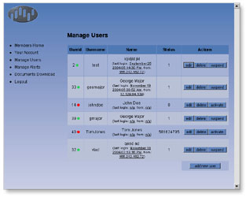

Array Corporation is predecessor of Abe Sekkei, Inc., was founded on the premise of designing and developing original electrical devices that large enterprises were unable to produce. The company's first product was a photographic densitometer.

Screen shot of secure user management panel